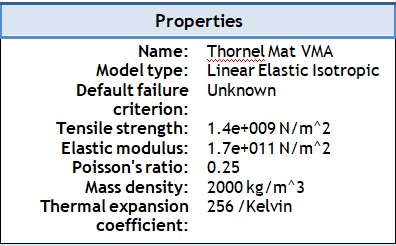
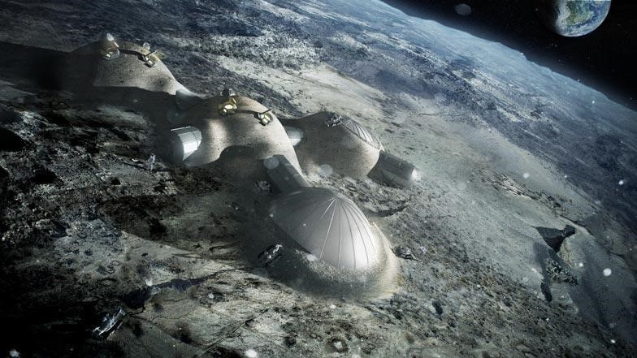
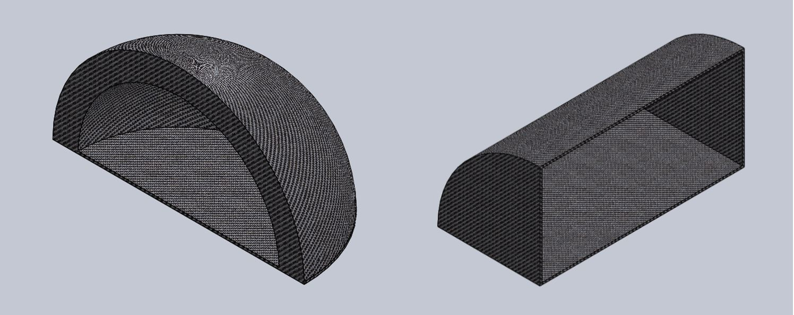
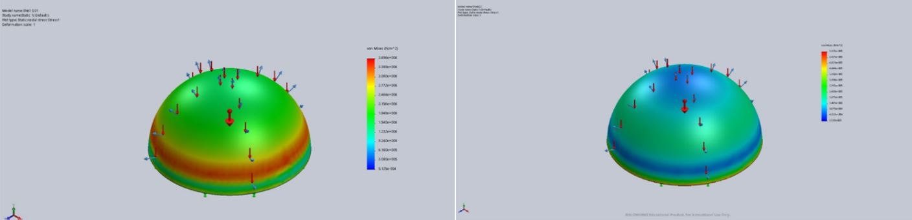
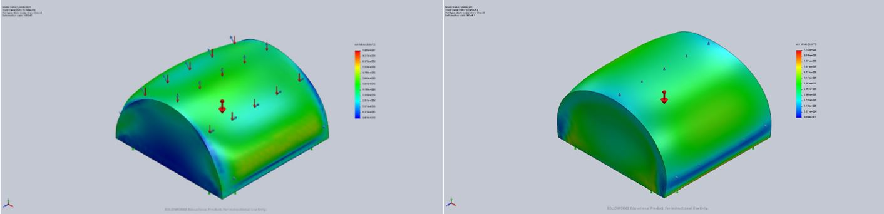

Inflatable Habitat Structures Design for the Lunar Surface
Writer: Stephanie Tu
Date: Fall 2018
Citation: Tu, Stephanie. (2018). Inflatable Habitat Structures Design for the Lunar Surface. Rutgers Research Review, 3(1).
My name is Stephanie Tu and I am from Somerset, NJ. I am a member of the Class of 2019, pursuing a major in Mechanical Engineering with a minor in Computer Science. Ever since I was young, I have always been interested in space and the possibility of life on other planets. During freshman year, I started researching on the topic of inflatable habitat structures for use on the Moon, with my advisor, Dr. Haym Benaroya of the Mechanical and Aerospace Engineering Department. After graduation, I plan on working in the industry for a period of time and then going back to attend graduate school.
While the interest in exploring outer space has been increasing, there has also been a growing need to colonize the Moon and to develop a permanent base there. Creating colonies on the Moon would yield several advantages, such as having a cheaper base to launch spacecraft from, a location for optical and radio observatories and a site to mine natural resources from. One specific structure that Moon bases could be constructed of are lunar habitats. The term “lunar habitat” encompasses any structure that could be utilized as a place for humans to reside and work while they are in space. Habitats that are inflatable provide a cheap and flexible alternative to rigid and heavy structures. They allow for tighter packing of materials and for more durable equipment to protect human life. Since there is a need for the design and manufacture of a lunar colony, there has been a shift to find the best inflatable designs for a multitude of space related endeavors.
Although only a few benefits of composite structures have been listed above, the possibilities for designs are endless and thus composite habitat structures are increasingly being chosen over their mechanical and fixed counterparts as likely habitats for space and the lunar surface. Ideally, the structure would be packaged and compressed into a specific shape on Earth and then stored on a launch vehicle to be shot up to the Moon. On the Moon, the structure would be unpacked, inflated to its desired shape and rigidized. Since these habitats would be used to support and contain human life, the designs must be optimized to best protect the humans that will inhabit it. These designs are typically engineered to withstand a multiple of the expected stress, measured by a factor of safety (FS). An appropriate value for an inflatable habitat on the Moon would be a minimum of 2, ensuring that the structure would be at least twice as strong than it needs to be to account for unforeseen stresses.
Furthermore, the environment in which a structure is to be inflated and rigidized is a strong indicator of the stressors it would encounter. The composition of the gases near the surface of the Moon and in the upper atmosphere are vastly different than their counterparts here on Earth. As a result, the surface of the Moon is subjected to extreme temperatures and radiation because there is no lunar atmosphere in existence that can adequately protect inhabitants. Another criterion that must be taken into account is that the structure should be optimized to withstand any debris that may collide with it. There are more than 500,000 pieces of debris, or ‘space junk,’ which can travel at speeds up to 17,500 mph, fast enough for a relatively small piece to damage a spacecraft or more importantly, an inflatable habitat (Garcia, 2015). Because there is always a chance for any of these pieces of space debris to collide with the inflatable habitat on the Moon, the structure must be able to withstand these impacts. The regolith on the Moon provides an excellent resource for protection from solar flare radiation and placing a regolith layer of 3 meters thick on the outside of the structure could provide adequate protection (Mottaghi et al., 2015). Settlement in lava tubes, or underground caves resulting from volcanic activity, would provide further protection for the inhabitants, especially from space debris. However, lava tubes must be further investigated before they can be used as habitat sites.
Several factors come into consideration when selecting a material for use in inflatable structures, such as competing strength and weight constraints, and constraints imposed by rigidization methods. The structure should be able to withstand packaging and compression into a specific shape on Earth, storage on a launch vehicle and transportation to the Moon. On the Moon, the structure should be able to be unpacked, inflated to its desired shape, and rigidized. Nevertheless, each material and rigidization technique is not without its faults, so researchers are still experimenting to find optimal combinations. The following table compares some of the candidate materials and the techniques by which they are rigidized.
| Material |
Composition |
Rigidize Via |
Reversibility |
| Laminates |
thin layer of films |
inflation pressure |
Yes |
| Thermally Cured Composites |
fibrous reinforcement |
spacecraft power (heat) |
No |
| Ultraviolet Cured Composites |
fibrous reinforcement |
UV energy from the Sun |
No |
| Inflation Gas Reactions |
composites enclosed in cover films |
catalyst gas |
No |
Table 1: Comparison of inflatable habitat materials (Cadogan et al., 2001).
Taking all these requirements into consideration, two different designs were created in SolidWorks, a computer aid drafting software that can perform finite element analysis on objects. Chosen from the table above, a thermally cured composite, the Carbon Fiber hybrid of Thornel MAT VMA, is one of the best options for inflatable structures that currently exists. The Thornel MAT VMA is composed of carbon fiber filaments in a random-layer orientation and the key material properties are shown in the table below. It is important to note is that the material choice was kept constant for all tests for consistency when comparing designs.

Table 2: Carbon Fiber Thornel MAT VMA Properties (MatWeb).
The basic design of the inflatable habitat structure that was tested is a dome shaped structure in the center with cylindrical tunnels leading out to other compartments. The dome in the middle is a central hub for the inhabitant, but the whole structure was compartmentalized to increase safety. In the event that one section is lost, the rest of the habitat is still usable. Figure 1 below depicts an illustration of what the inflatable habitat structures would look like when inflated, combined and rigidized on the Moon. This structure was designed with doors to each compartment so that they could be sealed individually to minimize air losses in an emergency. Additionally, there would be a redundant pressure containment system that would keep the rest of the system at optimal pressure if a section must be quarantined.

Figure 1: Expanded dome structures. Adapted from Frearson, 2015.
In SolidWorks analysis, the two designs, seen in Figure 2, were each fixed on a flat base with three loads applied to the structures. The first was the force of gravity, ⅙ of the gravity that acts on Earth, at a value of 5.322 ft/s2. The second load was a uniform pressure force of 6 psi that represented the pressure of the regolith, acting downwards on the structures. The last load was a pressure force of 15 psi outwards, normal to face of the structure, that represented the internal pressurization of the habitat. A base design was initially tested for both the central hub and the connecting subsections that was essentially a thin shell design. These base designs were used as a standard for comparison with thicker walled designs. The finite element model produced three different types of analysis: the displacement, von Mises stresses and strains for each of the designs that were tested. An advantage of the von Mises stress is that it is easier to identify weaknesses in the stress plots of the structure, and the results can be seen below. The blue sections of the plots shown below are the sections with the smallest stress acting on them, while the “hotter” colors like yellow and red depict the parts of the structure that face the most stress.

Figure 2: Circular hub thick shell (left) and cylindrical tunnel thin shell (right).

Figure 3: Circular hub stress analysis results. 0.01m thick (left) and 0.1m thick (right).

Figure 4: Cylindrical tunnel stress analysis results. 0.01m thick (left) and 0.1m thick (right).
|
Displacement |
Stress |
Strain |
| Min |
Max |
Min |
Max |
Min |
Max |
| Sphere 0.01m |
0 |
9.91E-3 |
5.13E-4 |
3.70E6 |
2.29E-11 |
1.69E-5 |
| Sphere 0.01m |
0 |
5.30E-4 |
2.53E-5 |
5.92E5 |
1.45E-11 |
2.10E-6 |
| Cylinder 0.01m |
0 |
6.20E5 |
6.48 |
1.01E7 |
3.82E-11 |
3.52E-5 |
| Cylinder 0.1m |
0 |
1.20E5 |
0.686 |
7.16E5 |
1.30E-11 |
3.14E-6 |
Table 3: Data comparison for both designs.
Both designs were shown to be able to withstand the theoretical forces that they would face on the moon. Furthermore, the designs that had the thicker top performed better by almost a factor of 10 in almost all three tests. As the need for a lunar colony continues to grow. people will be looking to utilize inflatable structures for the Moon. Although these designs have yet to be tested in a lab, they show that more layers are more effective against the forces of gravity and pressures that are present on the lunar surface. Further investigations must be done to see what effect the shape of the structure has on how the material will deform under pressures. As a result, there are many promising prospects for the future of life in space through the use of inflatable composite habitats.
References
- Cadogan, D., & Scarborough, S. (2001). Rigidizable materials for use in gossamer space inflatable structures. 19th AIAA Applied Aerodynamics Conference. doi:10.2514/6.2001-1417
- Cytec Thornel® Mat VMA Carbon Fiber. (n.d.). Retrieved from http://www.matweb.com/search/datasheettext.aspx?matguid=28eacaeec63740679b130fe100e37bfc
- Frearson, A. (2015, May 10). Foster Partners to 3D print buildings on the moon. Retrieved from https://www.dezeen.com/2013/01/31/foster-partners-to-3d-print-buildings-on-the-moon/
- Garcia, M. (2015, April 14). Space Debris and Human Spacecraft. Retrieved from https://www.nasa.gov/mission_pages/station/news/orbital_debris.html
- Mottaghi, S., & Benaroya, H. (2015). Design of a Lunar Surface Structure. I: Design Configuration and Thermal Analysis. Journal of Aerospace Engineering, 28(1), 04014052. doi:10.1061/(asce)as.1943-5525.0000382